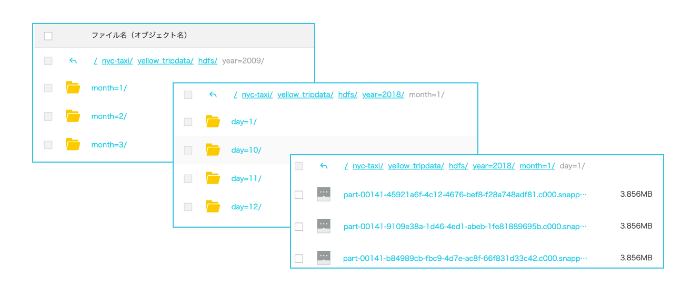

ApacheSpark（Batch）からOSSへ
はじめに
本章はApache Spark（Batch）を使ってAlibabaCloud OSSへデータを送ります。ゴールとしては以下のような構成図になります。

ApacheSparkでやる理由
別途、Apache Sparkとは何かを説明しました。これを使ってやる理由について説明します。 SparkはTB、PB、EB級の大量データを扱うことができます。マシン1台で処理できないデータでも、E-MapReduceとSparkを使えば分散してデータを取得・処理することができます。そのため、処理に時間がかかるものはSparkを積極的に活用することで、ビジネス上メリットを得ることができます。
Sparkの便利なことはIN/OUTデータソースが様々な形式へサポートしています。そのため、例えばcsvファイルをHDFS Parquetとして保存したり、MySQLやOracleのデータをHDFSとして保存、逆にOracleのデータをMySQLへ移植、HDFS_Parquetをcsvファイルへ保存することも可能です。
| データソース | text | json | csv | parquet | orc | jdbc |
|---|---|---|---|---|---|---|
| IN | ◯ | ◯ | ◯ | ◯ | ◯ | ◯ |
| OUT | ◯ | ◯ | ◯ | ◯ | ◯ | ◯ |
それでは実際にSpark処理をやってみます。今回はE-MapReduceを使って実装します。 ※ECSでも実現可能。その場合、スタンドアロン（単体）での処理になります。
Spark-Shell（対話型）で試してみる
Spark Batch処理をする前に、処理の流れとしてSparl-Shellを使って説明します。以下サンプルを入れていますので、流れをみていただければと思います。
環境について
| Clustor | instance | Type | 台数 |
|---|---|---|---|
| Hadoop EMR-3.22.0 | MASTER | ecs.sn2.large | 1 |
| CORE | ecs.sn2.large | 2 |
[root@emr-header-1 ~]# pyspark
Python 2.7.5 (default, Apr 11 2018, 07:36:10)
[GCC 4.8.5 20150623 (Red Hat 4.8.5-28)] on linux2
Type "help", "copyright", "credits" or "license" for more information.
Setting default log level to "WARN".
To adjust logging level use sc.setLogLevel(newLevel). For SparkR, use setLogLevel(newLevel).
19/08/15 15:25:28 WARN HiveConf: HiveConf of name hive.server2.enable.impersonation does not exist
19/08/15 15:25:29 WARN Utils: Service 'SparkUI' could not bind on port 4040. Attempting port 4041.
Welcome to
____ __
/ __/__ ___ _____/ /__
_\ \/ _ \/ _ `/ __/ '_/
/__ / .__/\_,_/_/ /_/\_\ version 2.4.3
/_/
Using Python version 2.7.5 (default, Apr 11 2018 07:36:10)
SparkSession available as 'spark'.
>>> a = [1, 2, 3, 4, 5]
>>> rdd = sc.parallelize(a)
>>> print(rdd.collect())
[1, 2, 3, 4, 5]
>>> print(rdd.take(2))
[1, 2]
>>>
>>>
>>> df = sqlContext.read.format("com.databricks.spark.csv").option("header", "true").option("inferSchema", "true").load("oss://bigdata-prod-tech/nyc-taxi/yellow_tripdata/csv/yellow_tripdata_2010-08.csv")
19/08/15 17:40:33 WARN HiveConf: HiveConf of name hive.server2.enable.impersonation does not exist
>>> df.top(5)
Traceback (most recent call last):
File "<stdin>", line 1, in <module>
File "/usr/lib/spark-current/python/pyspark/sql/dataframe.py", line 1300, in __getattr__
"'%s' object has no attribute '%s'" % (self.__class__.__name__, name))
AttributeError: 'DataFrame' object has no attribute 'top'
>>> df.show()
+---------+-------------------+-------------------+---------------+-------------+----------------+---------------+---------+------------------+-----------------+----------------+------------+-----------+---------+-------+----------+------------+------------+
|vendor_id| pickup_datetime| dropoff_datetime|passenger_count|trip_distance|pickup_longitude|pickup_latitude|rate_code|store_and_fwd_flag|dropoff_longitude|dropoff_latitude|payment_type|fare_amount|surcharge|mta_tax|tip_amount|tolls_amount|total_amount|
+---------+-------------------+-------------------+---------------+-------------+----------------+---------------+---------+------------------+-----------------+----------------+------------+-----------+---------+-------+----------+------------+------------+
| CMT|2010-08-25 16:55:54|2010-08-25 17:02:51| 1| 0.9| -73.990554| 40.750067| 1| N| -73.984793| 40.748424| CSH| 5.3| 1.0| 0.5| 0.0| 0.0| 6.8|
| CMT|2010-08-25 16:49:27|2010-08-25 17:02:15| 2| 1.8| -73.960153| 40.766382| 1| N| -73.980571| 40.765318| CSH| 8.5| 1.0| 0.5| 0.0| 0.0| 10.0|
| CMT|2010-08-25 18:56:44|2010-08-25 19:03:56| 2| 1.8| -73.960912| 40.764876| 1| N| -73.971936| 40.743987| CSH| 7.3| 1.0| 0.5| 0.0| 0.0| 8.8|
| CMT|2010-08-25 17:42:53|2010-08-25 17:52:00| 1| 1.6| -73.978349| 40.753755| 1| N| -73.994618| 40.734713| CSH| 6.9| 1.0| 0.5| 0.0| 0.0| 8.4|
| CMT|2010-08-25 18:33:36|2010-08-25 18:46:43| 1| 5.9| -74.011604| 40.707754| 1| N| -73.96428| 40.75641| CSH| 15.3| 1.0| 0.5| 0.0| 0.0| 16.8|
| CMT|2010-08-25 18:26:02|2010-08-25 18:33:01| 1| 1.5| 0.0| 0.0| 1| N| 0.0| 0.0| CSH| 6.1| 1.0| 0.5| 0.0| 0.0| 7.6|
| CMT|2010-08-25 09:39:42|2010-08-25 09:48:56| 1| 1.6| -73.970818| 40.788291| 1| N| -73.952251| 40.789791| CSH| 7.3| 0.0| 0.5| 0.0| 0.0| 7.8|
| CMT|2010-08-25 07:10:51|2010-08-25 07:17:42| 1| 1.6| -73.999173| 40.732382| 1| N| -74.010951| 40.716006| CRD| 6.5| 0.0| 0.5| 1.0| 0.0| 8.0|
| CMT|2010-08-25 07:09:54|2010-08-25 07:24:21| 1| 3.4| -73.925234| 40.744107| 1| N| -73.976631| 40.757641| CRD| 11.3| 0.0| 0.5| 2.36| 0.0| 14.16|
| CMT|2010-08-25 18:50:13|2010-08-25 18:51:46| 1| 0.3| -73.964992| 40.769131| 1| N| -73.968243| 40.765135| CSH| 3.3| 1.0| 0.5| 0.0| 0.0| 4.8|
| CMT|2010-08-24 18:29:43|2010-08-24 18:38:16| 1| 1.7| -73.97112| 40.762027| 1| N| -73.949569| 40.77218| CSH| 7.3| 1.0| 0.5| 0.0| 0.0| 8.8|
| CMT|2010-08-25 12:32:45|2010-08-25 13:18:31| 1| 21.2| -73.982377| 40.762223| 2| N| -73.789045| 40.64233| CSH| 45.0| 0.0| 0.5| 0.0| 4.57| 50.07|
| CMT|2010-08-25 02:12:03|2010-08-25 02:18:40| 1| 1.1| -73.984696| 40.758834| 1| N| -73.992362| 40.766537| CSH| 5.7| 0.5| 0.5| 0.0| 0.0| 6.7|
| CMT|2010-08-24 22:55:39|2010-08-24 22:57:09| 2| 0.5| -73.970982| 40.752929| 1| N| -73.975142| 40.745102| CSH| 3.3| 0.5| 0.5| 0.0| 0.0| 4.3|
| CMT|2010-08-25 17:20:06|2010-08-25 17:27:30| 1| 2.6| -73.962069| 40.759348| 1| N| -73.936891| 40.792298| CSH| 8.1| 1.0| 0.5| 0.0| 0.0| 9.6|
| CMT|2010-08-25 19:00:12|2010-08-25 19:03:10| 2| 0.5| -73.945084| 40.778577| 1| N| -73.953714| 40.781227| CSH| 3.7| 1.0| 0.5| 0.0| 0.0| 5.2|
| CMT|2010-08-25 18:33:42|2010-08-25 18:38:26| 2| 0.7| -73.994903| 40.731576| 1| N| -73.987274| 40.729054| CSH| 4.5| 1.0| 0.5| 0.0| 0.0| 6.0|
| CMT|2010-08-24 23:14:00|2010-08-24 23:20:22| 1| 0.9| -73.985465| 40.760003| 1| N| -73.997547| 40.75638| CRD| 5.3| 0.5| 0.5| 1.2| 0.0| 7.5|
| CMT|2010-08-24 23:44:16|2010-08-24 23:52:19| 1| 2.2| -74.011916| 40.706786| 1| N| -74.003883| 40.732755| CSH| 7.7| 0.5| 0.5| 0.0| 0.0| 8.7|
| CMT|2010-08-24 18:27:22|2010-08-24 18:46:01| 1| 3.2| -73.955509| 40.779722| 1| N| -73.984703| 40.739615| CRD| 12.1| 1.0| 0.5| 3.4| 0.0| 17.0|
+---------+-------------------+-------------------+---------------+-------------+----------------+---------------+---------+------------------+-----------------+----------------+------------+-----------+---------+-------+----------+------------+------------+
only showing top 20 rows
>>>
>>>
>>> df.createOrReplaceTempView("nytaxi")
>>> nytaxi_list_df = spark.sql("SELECT pickup_datetime, dropoff_datetime, passenger_count, pickup_longitude, pickup_latitude FROM nytaxi WHERE passenger_count = 2")
>>> nytaxi_list_df.show()
+-------------------+-------------------+---------------+----------------+---------------+
| pickup_datetime| dropoff_datetime|passenger_count|pickup_longitude|pickup_latitude|
+-------------------+-------------------+---------------+----------------+---------------+
|2010-08-25 16:49:27|2010-08-25 17:02:15| 2| -73.960153| 40.766382|
|2010-08-25 18:56:44|2010-08-25 19:03:56| 2| -73.960912| 40.764876|
|2010-08-24 22:55:39|2010-08-24 22:57:09| 2| -73.970982| 40.752929|
|2010-08-25 19:00:12|2010-08-25 19:03:10| 2| -73.945084| 40.778577|
|2010-08-25 18:33:42|2010-08-25 18:38:26| 2| -73.994903| 40.731576|
|2010-08-24 19:35:31|2010-08-24 19:39:21| 2| -74.004164| 40.742297|
|2010-08-24 17:47:44|2010-08-24 17:56:28| 2| -73.999218| 40.718953|
|2010-08-23 22:29:54|2010-08-23 22:48:10| 2| -73.967677| 40.744444|
|2010-08-26 12:19:23|2010-08-26 12:28:15| 2| -73.979934| 40.764332|
|2010-08-25 19:04:37|2010-08-25 19:12:22| 2| -73.970949| 40.759029|
|2010-08-25 23:20:24|2010-08-25 23:24:01| 2| -73.990314| 40.740772|
|2010-08-25 21:42:37|2010-08-25 21:52:28| 2| -73.982866| 40.742284|
|2010-08-26 00:08:44|2010-08-26 00:24:50| 2| -73.994291| 40.751075|
|2010-08-23 22:47:25|2010-08-23 22:57:31| 2| -73.996476| 40.744429|
|2010-08-23 17:09:19|2010-08-23 17:11:13| 2| -73.958722| 40.772043|
|2010-08-24 21:12:04|2010-08-24 21:27:40| 2| -74.002412| 40.730339|
|2010-08-24 20:08:02|2010-08-24 20:12:07| 2| -73.992127| 40.749433|
|2010-08-25 02:35:51|2010-08-25 02:38:27| 2| -73.991222| 40.745008|
|2010-08-25 21:50:25|2010-08-25 21:55:20| 2| -73.964557| 40.763893|
|2010-08-23 19:52:19|2010-08-23 19:58:15| 2| 0.0| 0.0|
+-------------------+-------------------+---------------+----------------+---------------+
only showing top 20 rows
>>>
>>>
>>> nytaxi_list_df.coalesce(1).write.format('com.databricks.spark.csv').option("overwrite", "true").save('oss://bigdata-prod-tech/nyc-taxi/yellow_tripdata/from_spark_csv/')
>>> 結果、OSSに加工処理したDataFrameがcsvとして保存されました。

ここでポイントとなる点は以下の通りです。
既存データからDataFrameの作成
途中、”com.databricks.spark.csv” はSparkを生み出した会社「databricks」によるフレームワークを使って処理になります。詳しくはこちらを参照ください。 https://databricks.com/spark/about
# 単数のcsvファイルをDF（DataFrame）へ読み込む
df = spark.read.csv("oss://my-backet/folder/data.csv")
# 複数のcsvファイルをまとめてDF（DataFrame）へ読み込む
df = spark.read.csv("oss://my-backet/folder/*.csv")
# 単数のcsvファイルをDF（DataFrame）へ読み込む（高速処理）
df = sqlContext.read.format("com.databricks.spark.csv").option("header", "true").option("inferSchema", "true").load("oss://my-backet/folder/data.csv")
# 単数のjson形式をDF（DataFrame）へ読み込む。先にフィールド名を指定する必要があります
fields = [StructField('pickup_datetime', StringType(), True),
StructField('dropoff_datetime', StringType(), True),
StructField('passenger_count', IntegerType(), True)]
df = spark.read.json("oss://my-backet/folder/*.json", schema=StructType(fields))
# parquet形式をDF（DataFrame）へ読み込む
df = spark.read.parquet("oss://my-backet/folder/")
# mySQLをjdbc経由でDF（DataFrame）へ読み込む
df = sqlcontext.read.format("jdbc").option("url", "jdbc:mysql://test:3306/table").option("driver", "com.mysql.jdbc.Driver").option("dbtable", "test_table").option("user", "root").option("password", "xxxxx").load()既存DataFrameからOSSへの出力
# DF（DataFrame）を単数のcsvファイルとして保存
df = spark.write.csv("oss://my-backet/folder/data.csv")
# DF（DataFrame）を複数ののcsvファイルとして保存
df = spark.write.csv("oss://my-backet/folder/*.csv")
# DFを単数のcsvファイルとして保存（高速処理）
df.coalesce(1).write.format('com.databricks.spark.csv').option("overwrite", "true").save('oss://my-backet/folder/')
# parquet形式をDF（DataFrame）へ読み込む
df = spark.read.parquet("oss://my-backet/folder/")
# MySQLをjdbc経由でDF（DataFrame）へ読み込む
df.write.format("jdbc").option("url", "jdbc:mysql://test:3306/table").option("dbtable", "test_table").option("user", "root").option("password", "xxxxx").save()Spark（batch型）を作成し実行する。
上記、ファイルのRead/Writeは理解できたと思いますので、これをBatchとして組み込み、実行します。
この処理はOSSにあるnyc-taxi CSVファイル全データをOSSのHDFS_Parquetへ変換し保存するものです。
OSSには以下 このようなcsvファイルがあるとします。

次に、convert2parquet.pyというPython実行ファイルを作成します。
※ 本来はScalaでやったほうが役120倍高速ですが、解説のためにPythonで実施します。
※ SparkによるETLはCore台数を20〜100台にするとより高速処理ができます。また1時間以内、早い時間で処理が終われば早いほどその分投資回収もできます。
# -*- coding: utf-8 -*-
from concurrent.futures import ThreadPoolExecutor, as_completed
from pyspark.sql import SparkSession
from pyspark.sql.types import StructType, StructField
from pyspark.sql.types import DoubleType, IntegerType, StringType, TimestampType
from pyspark.sql.functions import year, month, dayofmonth, col
from pyspark.sql import functions as func
def write2parquet():
df_add_partition.repartition(*partitionby).write.partitionBy(partitionby)
.mode("append").parquet(output, compression=codec)
input = 'oss://bigdata-prod-tech/nyc-taxi/yellow_tripdata/csv/*.csv'
output = 'oss://bigdata-prod-tech/nyc-taxi/yellow_tripdata/hdfs/'
codec = 'snappy'
partitionby=['year','month','day']
# Read
spark = SparkSession.builder.appName('Convert2Parquet').getOrCreate()
struct = StructType([
StructField('VendorID', IntegerType(), False),
StructField('tpep_pickup_datetime', TimestampType(), False),
StructField('tpep_dropoff_datetime', TimestampType(), False),
StructField('passenger_count', IntegerType(), False),
StructField('trip_distance', DoubleType(), False),
StructField('RatecodeID', IntegerType(), False),
StructField('store_and_fwd_flag', StringType(), False),
StructField('PULocationID', IntegerType(), False),
StructField('DOLocationID', IntegerType(), False),
StructField('payment_type', IntegerType(), False),
StructField('fare_amount', DoubleType(), False),
StructField('extra', DoubleType(), False),
StructField('mta_tax', DoubleType(), False),
StructField('tip_amount', DoubleType(), False),
StructField('tolls_amount', DoubleType(), False),
StructField('improvement_surcharge', DoubleType(), False),
StructField('total_amount', DoubleType(), False)
])
df = spark.read.csv(input, header=False, mode="DROPMALFORMED", schema=struct)
df_add_partition = (df.withColumn("year", year(col("tpep_pickup_datetime").cast("timestamp")))
.withColumn("month", month(col("tpep_pickup_datetime").cast("timestamp")))
.withColumn("day", dayofmonth(col("tpep_pickup_datetime").cast("timestamp"))))
# Write
futures=[]
pool = ThreadPoolExecutor(1)
futures.append(pool.submit(write2parquet))
for x in as_completed(futures):
pass
spark.stop()このファイルを以下のコマンドで実行してください。以下の例はCoreが2台の場合の例です。 ※ Spark-submit引数のより詳しい説明は別の章にて説明します。
$ spark-submit --num-executors 85 --executor-memory 5g convert2parquet.py 実行結果、しばらくすると以下のようにHDFS Parquetファイルたちができました。
